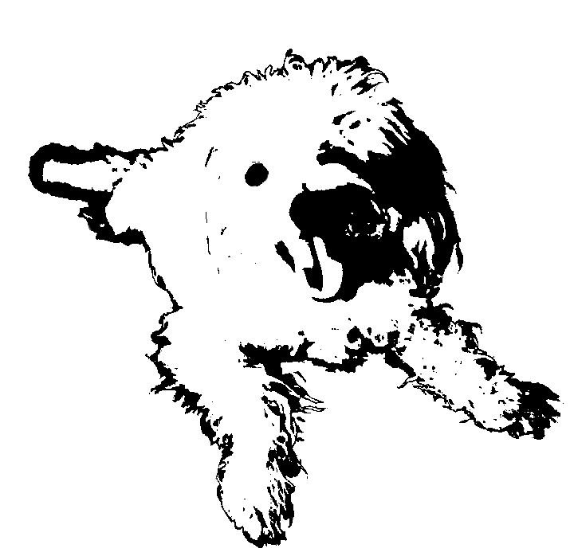

v0.0.4 ~ 9911235
Snowy 
User's Guide | API Reference
| add_border |
Extend the size of an image by adding borders. |
| blur |
Resample an image and produce a new image with the same size. |
| compose |
Compose a source image with alpha onto a destination image. |
| compose_premultiplied |
Draw an image with premultiplied alpha over the destination. |
| delinearize |
Transform colors from physically linear to perceptually linear. |
| ensure_alpha |
If the incoming image is 3-channel, adds a 4th channel. |
| export |
Export a numpy array to a PNG, JPEG, or EXR image file. |
| extract_alpha |
Extract the alpha plane from an RGBA image. |
| extract_rgb |
Extract the RGB planes from an RGBA image. |
| from_planar |
Create a channel-major image into row-major image. |
| generate_gdf |
Create an generalized squared distance field from a scalar field. |
| generate_noise |
Generate a single-channel gradient noise image. |
| generate_sdf |
Create a signed distance field from a boolean field. |
| generate_udf |
Create an unsigned distance field from a boolean field. |
| gradient |
Compute X derivatives and Y derivatives. |
| hflip |
Horizontally mirror the given image. |
| hstack |
Horizontally concatenate a list of images with a border. |
| linearize |
Transform colors from perceptually linear to physically linear. |
| load |
Create a numpy array from the given PNG, JPEG, or EXR image file. |
| reshape |
Add a trailing dimension to single-channel 2D images. |
| resize |
Create a new numpy image with the desired size. |
| rotate |
Rotate image counter-clockwise by a multiple of 90 degrees. |
| show |
Display an image in a platform-specific way. |
| to_planar |
Convert a row-major image into a channel-major image. |
| unitize |
Remap the values so that they span the range from 0 to +1. |
| unshape |
Remove the trailing dimension from single-channel 3D images. |
| vflip |
Vertically mirror the given image. |
| vstack |
Vertically concatenate a list of images with a border. |
Extend the size of an image by adding borders.
The sides argument defaults to "LTRB", which enables borders for all four sides: Left, Top, Right, and Bottom. This can be used to select which borders you wish to add.
def add_border(image: np.ndarray, width=2, value=0, sides='ltrb'):
result = image
sides = sides.upper()
if 'L' in sides: result = add_left(result, width, value)
if 'T' in sides: result = add_top(result, width, value)
if 'R' in sides: result = add_right(result, width, value)
if 'B' in sides: result = add_bottom(result, width, value)
return result
Resample an image and produce a new image with the same size. For a list of available filters, see resize.
def blur(image, filter=GAUSSIAN, radius=4, wrapx=False, wrapy=False):
width, height = image.shape[1], image.shape[0]
return resize(image, width, height, filter, radius, wrapx, wrapy)
Compose a source image with alpha onto a destination image.
def compose(dst: np.ndarray, src: np.ndarray) -> np.ndarray:
a, b = ensure_alpha(src), ensure_alpha(dst)
alpha = extract_alpha(a)
result = b * (1.0 - alpha) + a * alpha
if dst.shape[2] == 3:
return extract_rgb(result)
return result
Draw an image with premultiplied alpha over the destination.
def compose_premultiplied(dst: np.ndarray, src: np.ndarray):
a, b = ensure_alpha(src), ensure_alpha(dst)
alpha = extract_alpha(a)
result = b * (1.0 - alpha) + a
if dst.shape[2] == 3:
return extract_rgb(result)
return result
Transform colors from physically linear to perceptually linear. This is automatically performed when using export to a PNG or JPEG. See also linearize.
def delinearize(image, source_space=SRGB):
if source_space == SRGB:
return linear_to_sRGB(image)
return linear_to_gamma(image)
If the incoming image is 3-channel, adds a 4th channel.
def ensure_alpha(src: np.ndarray) -> np.ndarray:
assert len(src.shape) == 3
if src.shape[2] != 3:
return src
alpha = np.ones(src.shape[:2])
r, g, b = to_planar(src)
return from_planar(np.array([r, g, b, alpha]))
Export a numpy array to a PNG, JPEG, or EXR image file. This function automatically multiplies PNG / JPEG images by 255. See also unshape and delinearize (which this calls).
def export(image: np.ndarray, filename: str, delinearize=True):
assert filename.endswith('.png') or filename.endswith('.jpeg') or \
filename.endswith('.jpg') or filename.endswith('.exr')
_export(image, filename, delinearize)
Extract the alpha plane from an RGBA image. Note that this returns a copy, not a view. To manipulate the pixels in a view of the alpha plane, simply make a numpy slice, as in: alpha_view = myimage[:,:,3].
def extract_alpha(image: np.ndarray) -> np.ndarray:
assert len(image.shape) == 3 and image.shape[2] == 4
return np.dsplit(image, 4)[3].copy()
Extract the RGB planes from an RGBA image. Note that this returns a copy. If you wish to obtain a view that allows mutating pixels, simply use slicing instead. For example, to invert the colors of an image while leaving alpha intact, you can do: myimage[:,:,:3] = 1.0 - myimage[:,:,:3].
def extract_rgb(image: np.ndarray) -> np.ndarray:
assert len(image.shape) == 3 and image.shape[2] >= 3
planes = np.dsplit(image, image.shape[2])
return np.dstack(planes[:3])
Create a channel-major image into row-major image. This creates a copy, not a view.
def from_planar(image: np.ndarray) -> np.ndarray:
assert len(image.shape) == 3
return np.dstack(image)
Create an generalized squared distance field from a scalar field.
def generate_gdf(image: np.ndarray, wrapx=False, wrapy=False):
"Create an generalized squared distance field from a scalar field."
assert image.dtype == 'float64', 'Pixel values must be real'
assert len(image.shape) == 3, 'Shape is not rows x cols x channels'
assert image.shape[2] == 1, 'Image must be grayscale'
generate_gdf(image: np.ndarray, wrapx=False, wrapy=False):
"Create an generalized squared distance field from a scalar field."
assert image.dtype == 'float64', 'Pixel values must be real'
assert len(image.shape) == 3, 'Shape is not rows x cols x channels'
assert image.shape[2] == 1, 'Image must be grayscale'
return _generate_gdt(image, wrapx, wrapy)
Generate a single-channel gradient noise image. A frequency of 1.0 creates a single surflet across the width of the image, while a frequency of 4.0 creates a 4x4 grid such that the (2,2) surflet is centered. Noise values live within the [-1,+1] range.
def generate_noise(width, height, frequency, seed=1, wrapx=False,
wrapy=False, offset=[0,0]):
return _noise(width, height, frequency, seed, wrapx, wrapy, offset)
Create a signed distance field from a boolean field.
def generate_sdf(image: np.ndarray, wrapx=False, wrapy=False):
a = generate_udf(image, wrapx, wrapy)
b = generate_udf(image == 0.0, wrapx, wrapy)
return a - b
Create an unsigned distance field from a boolean field.
def generate_udf(image: np.ndarray, wrapx=False, wrapy=False):
assert image.dtype == 'bool', 'Pixel values must be boolean'
assert len(image.shape) == 3, 'Shape is not rows x cols x channels'
assert image.shape[2] == 1, 'Image must be grayscale'
return _generate_edt(image, wrapx, wrapy)
Compute X derivatives and Y derivatives.
def gradient(img):
nx, ny = np.gradient(unshape(img))
return reshape(nx), reshape(ny)
Horizontally mirror the given image.
def hflip(source: np.ndarray) -> np.ndarray:
assert len(source.shape) == 3, 'Shape is not rows x cols x channels'
assert source.dtype == np.float, 'Images must be doubles.'
h, w, c = source.shape
result = np.empty([h, w, c])
jit_hflip(result, source)
return result
Horizontally concatenate a list of images with a border. This is similar to numpy's hstack except that it adds a border around each image. The borders can be controlled with the optional border_width and border_value arguments. See also vstack.
def hstack(images, border_width=2, border_value=0):
if border_width == 0: return np.hstack(images)
T, V = border_width, border_value
result = []
for image in images[:-1]:
result.append(add_border(image, T, V, 'LTB'))
result.append(add_border(images[-1], T, V))
return np.hstack(result)
Transform colors from perceptually linear to physically linear. This is automatically performed when using load on a PNG or JPEG. See also delinearize.
def linearize(image, target_space=SRGB):
if target_space == SRGB:
return sRGB_to_linear(image)
return gamma_to_linear(image)
Create a numpy array from the given PNG, JPEG, or EXR image file. Regardless of the pixel format on disk, PNG / JPEG images are always divided by 255, and PNG images are extended to 4 color channels. See also reshape and linearize (which this calls).
def load(filename: str, linearize=True) -> np.ndarray:
ext = filename[filename.rfind('.'):]
assert ext == '.png' or ext == '.jpeg' or ext == '.jpg' or ext == '.exr'
return reshape(np.float64(_load(filename, ext, not linearize)))
Add a trailing dimension to single-channel 2D images. See also unshape.
def reshape(image):
if len(image.shape) == 2:
image = np.reshape(image, image.shape + (1,))
return image
Create a new numpy image with the desired size. Either width or height can be null, in which case its value is inferred from the aspect ratio of the source image. Filter can be HERMITE, TRIANGLE, GAUSSIAN, NEAREST, LANCZOS, or MITCHELL.
def resize(source, width=None, height=None, filter=None, radius=1,
wrapx=False, wrapy=False):
assert len(source.shape) == 3, 'Shape is not rows x cols x channels'
assert width != None or height != None, 'Missing target size'
aspect = source.shape[1] / source.shape[0]
if width == None: width = height * aspect
if height == None: height = width / aspect
magnifying = width > source.shape[1]
if filter == None: filter = MITCHELL if magnifying else LANCZOS
return resample(source, width, height, filter, radius, wrapx, wrapy)
Rotate image counter-clockwise by a multiple of 90 degrees.
def rotate(source: np.ndarray, degrees) -> np.ndarray:
assert len(source.shape) == 3, 'Shape is not rows x cols x channels'
assert source.dtype == np.float, 'Images must be doubles.'
h, w, c = source.shape
degrees %= 360
if degrees == 90:
result = np.empty([w, h, c])
rotate90(result, source)
elif degrees == 180:
result = np.empty([h, w, c])
rotate180(result, source)
elif degrees == 270:
result = np.empty([w, h, c])
rotate270(result, source)
else:
assert False, 'Angle must be a multiple of 90.'
return result
Display an image in a platform-specific way.
def show(image, delinearize=True):
if isinstance(image, np.ndarray):
show_array(image, delinearize)
elif isinstance(image, str):
show_filename(image)
else:
raise ValueError('Unsupported type')
Convert a row-major image into a channel-major image. This creates a copy, not a view.
def to_planar(image: np.ndarray) -> np.ndarray:
assert len(image.shape) == 3
result = np.array(np.dsplit(image, image.shape[2]))
return np.reshape(result, result.shape[:-1])
Remap the values so that they span the range from 0 to +1.
def unitize(img):
return (img - np.amin(img)) / (np.amax(img) - np.amin(img))
Remove the trailing dimension from single-channel 3D images. See also reshape.
def unshape(image):
if len(image.shape) == 3 and image.shape[2] == 1:
return np.reshape(image, image.shape[:2])
return image
Vertically mirror the given image.
def vflip(source: np.ndarray) -> np.ndarray:
assert len(source.shape) == 3, 'Shape is not rows x cols x channels'
assert source.dtype == np.float, 'Images must be doubles.'
h, w, c = source.shape
result = np.empty([h, w, c])
jit_vflip(result, source)
return result
Vertically concatenate a list of images with a border. This is similar to numpy's vstack except that it adds a border around each image. The borders can be controlled with the optional border_width and border_value arguments. See also hstack.
def vstack(images, border_width=2, border_value=0):
if border_width == 0: return np.vstack(images)
T, V = border_width, border_value
result = []
for image in images[:-1]:
result.append(add_border(image, T, V, 'LTR'))
result.append(add_border(images[-1], T, V))
return np.vstack(result)